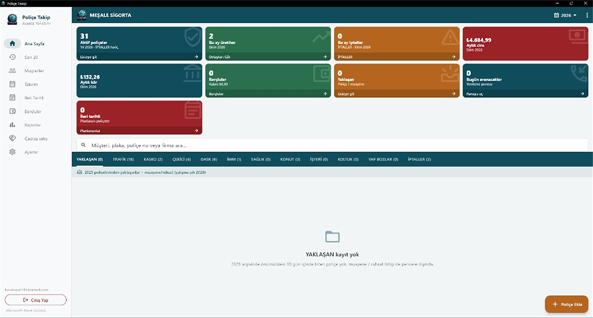
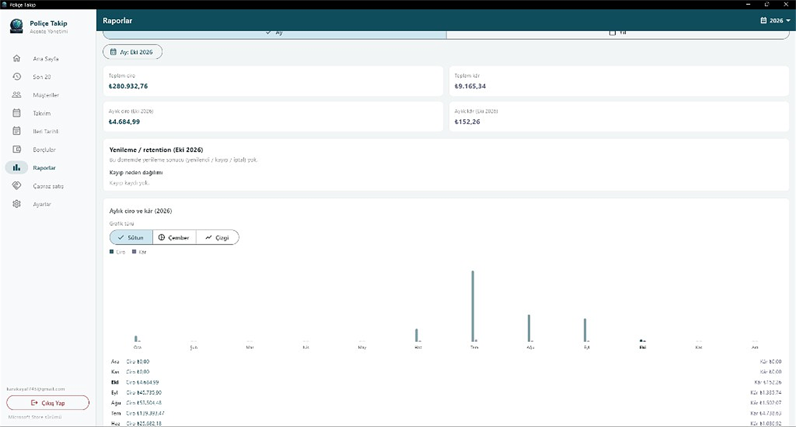
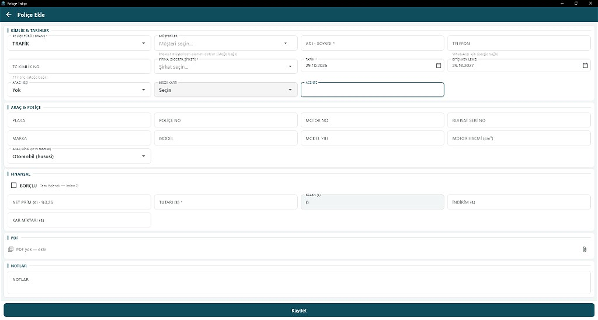
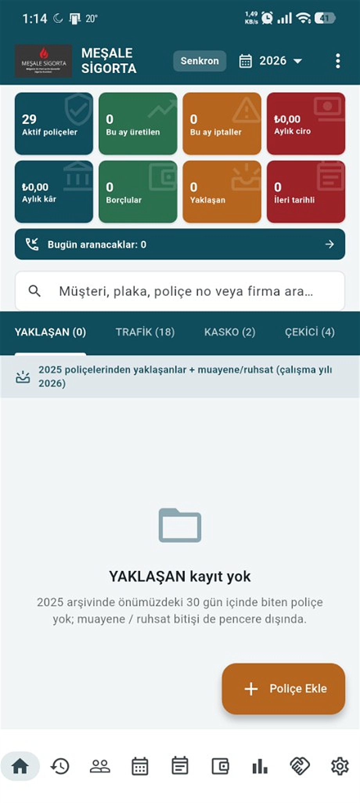
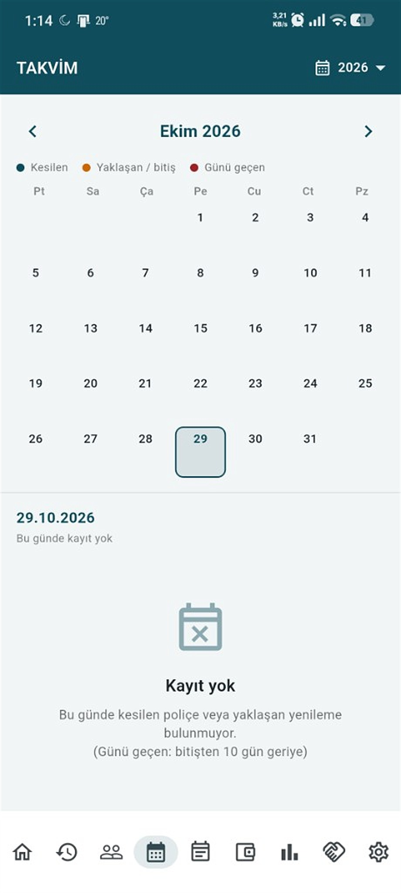
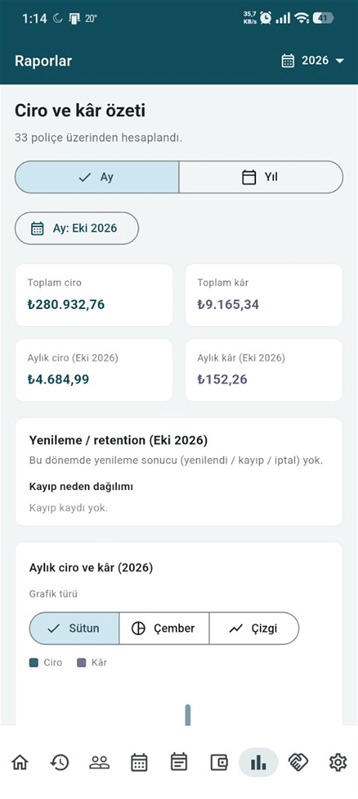
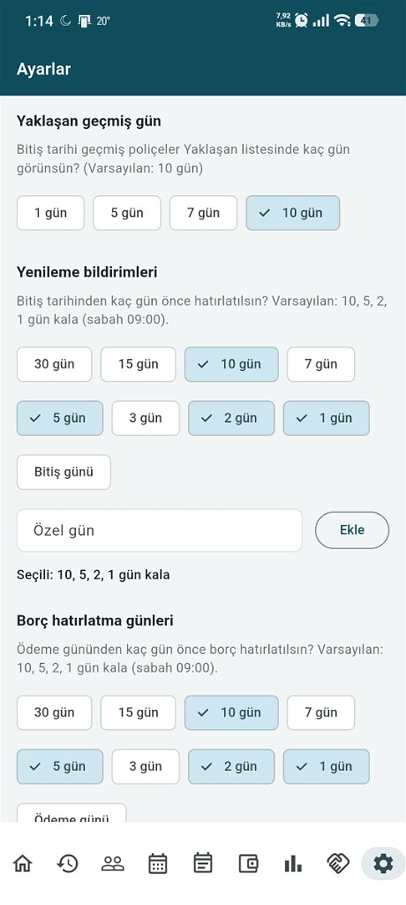

Windows
PC uygulaması



Android / iOS
Mobil uygulama
Telefon ekranları — aynı sabit çerçeve boyutunda.




Uygulama
Gerçek ekran görüntüleri — önce Windows PC, ardından Android / iOS mobil.
Windows



Android / iOS
Telefon ekranları — aynı sabit çerçeve boyutunda.



